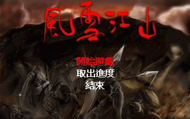
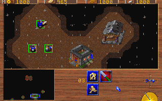

名稱：風雪江山／忠武公傳：亂中日記篇 (War Diary，中文版) 簡介：韓國Trigger 1996年出品的即時戰略遊戲，由元康中文化並代理發行 [待補]。

保護：光碟，破解碼不明。 限制：遊戲固定以C:\DYNASTY做為資訊存取目錄（英文版則是C:\NANJUNG）。 備註：電腦速度不可太快，否則可能無法偵測到音效卡而無法執行。 備註：本遊戲硬碟版主程式GAME.EXE，有已破解（503KB）和未破解（663KB）兩種，其伴隨 的SETUP.EXE大小亦不同，尚不清楚何者為正確。